放置すると慢性化する不調。まずは自分の姿勢タイプを知ることから。
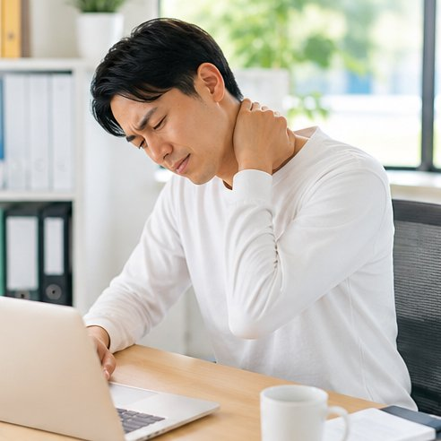
長時間のデスクワークで首が前に出て、首肩への負担が蓄積していませんか。
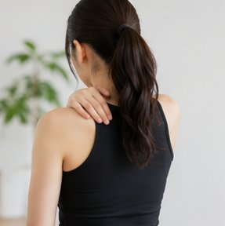
巻き肩で肩甲骨が外に開き、背中の張りや呼吸の浅さにつながります。
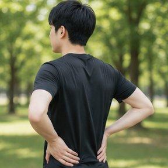
反り腰・骨盤の傾きが腰部へ過度な負担をかけているサインかも。
うつむき姿勢で頸椎に大きな負荷。若年層にも急増しています。
モニター位置や椅子の高さが合わず、姿勢の乱れが加速します。
無意識の習慣が左右差・骨盤の歪みを生み、バランスを崩します。
専門家監修×AI解析で、信頼できる診断と改善提案を完全無料で。
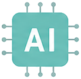
正面・側面・背面の3方向から姿勢を自動解析。
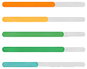
姿勢を12タイプに分類し詳細スコアを表示。
医師＋理学療法士監修で安心の信頼性。
会員登録もアプリも不要。今すぐ診断可能。
ブラウザ内完結でプライバシーを保護。
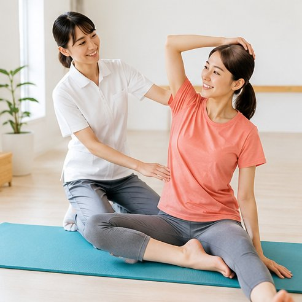
整形外科医と理学療法士が、姿勢タイプの判定基準と改善メニューの設計を監修。臨床現場の視点を取り入れ、信頼できる診断を目指しています。
所要時間わずか30秒。スマホひとつで気軽にチェック。
質問に答える、または姿勢を撮影して状態を入力します。
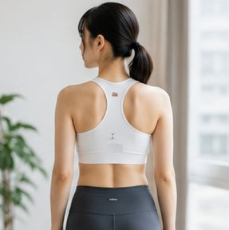
キーポイントを検出し、12タイプ分類とスコアを瞬時に算出。
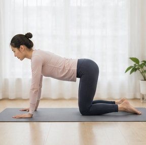
姿勢タイプに合ったストレッチ・運動メニューを提案します。
総合スコアとカテゴリ別の内訳で、弱点がひと目でわかります。
まずまずの姿勢タイプ
あと少しの改善で良好ゾーンへ
※ 実際の診断では、回答内容に応じたスコア・グラフ・改善エクササイズが表示されます。
「まず自分の姿勢タイプを知る」なら、無料・30秒・登録不要の本ツールが最適です。
| 姿勢スコア診断 | 整体・整骨院 | 市販の姿勢アプリ | |
|---|---|---|---|
| 料金 | ¥0 完全無料 | 3,000〜6,000円/回 | 月額あり |
| 所要時間 | 約30秒 | 予約・来店が必要 | 5〜10分 |
| 登録・インストール | 不要 | 予約必須 | 必要 |
| 専門家監修 | ✓ | ✓ | △ |
| 12タイプ分類スコア | ✓ | — | △ |
| 改善エクササイズ提案 | ✓ | ✓ | △ |
| プライバシー | ブラウザ内完結 | — | 外部送信あり |
※ 一般的な料金・特徴をもとにした比較イメージです。本ツールは医療行為ではありません。
デスクワーク世代の多くが、自覚のないまま姿勢の負担を抱えています。
姿勢の乱れは、肩こり・腰痛だけでなく、呼吸の浅さや集中力の低下にもつながります。あてはまる不調を可視化し、原因タイプから対策を始めましょう。
※ 自覚症状アンケートをもとにした参考値（複数回答）。
姿勢タイプに合わせて、自宅でできるストレッチ・運動をわかりやすく提案します。
巻き肩・猫背タイプに。固まった胸まわりをゆるめて姿勢をリセット。
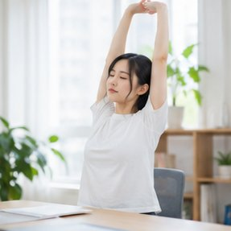
反り腰・骨盤の傾きタイプに。土台となる体幹を安定させます。
スマホ首タイプに。前に出た頭の位置を整え、こりを和らげます。
頬杖・足組みなどのクセを見直し、日常から姿勢を底上げします。
職業・生活習慣別に、姿勢悪化のリスクと対策を提案します。
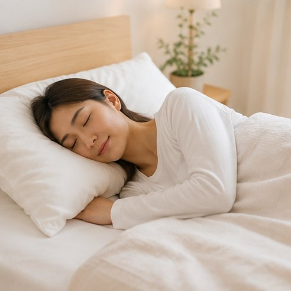
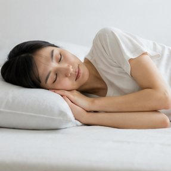
医師＋理学療法士が監修したロジックと、ブラウザ内で完結するセキュア設計。あなたの姿勢の課題を、専門家の視点で正確に可視化します。
「自分の姿勢タイプが分かった」という声を多くいただいています。
「在宅勤務で肩こりがひどく…。診断で猫背タイプと分かり、提案されたストレッチを続けたら朝のだるさが軽くなりました。」
「スマホばかり見ていて首がつらかったのですが、スマホ首タイプと数値で出て納得。意識するきっかけになりました。」
「登録なしで30秒。結果のグラフで弱い部分がひと目で分かるのが良かったです。家族にもすすめました。」
※ 個人の感想であり、効果を保証するものではありません。